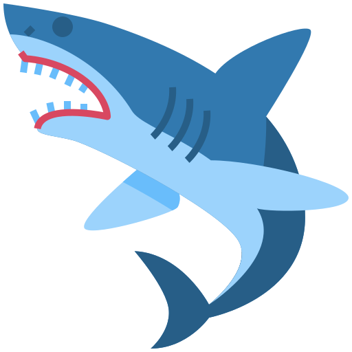

Porbeagle Shark
Price: $16,000
The porbeagle or porbeagle shark (Lamna nasus) is a type of mackerel shark found in the cold and temperate marine waters of the North Atlantic and Southern Hemispheres. The ecological equivalent in the North Pacific is the closely related salmon shark (L. ditropis). It can grow to be 2.5 m (8.2 ft) long and weigh 135 kg (298 lb); North Atlantic sharks grow larger than Southern Hemisphere sharks and have different coloration and life histories. The porbeagle has a very stout midsection that tapers towards the long, pointed snout and the narrow base of the tail. It is grey above and white below.
This species is distinguished by its three-cusped teeth, a white blotch at the aft base of its first dorsal fin, and two pairs of lateral keels on its tail. The porbeagle is an opportunistic hunter that primarily preys on bony fish and cephalopods in the water column. It is most commonly found over food-rich banks on the outer continental shelf, but it also ventures close to shore and into the open ocean to depths of 1,360 m. It also makes long-distance seasonal migrations, moving between shallower and deeper water. It is quick and active, and it has physiological adaptations that allow it to keep a higher body temperature. It can be solitary or gregarious, and it has been observed engaging in seemingly playful behaviour.
 More Info